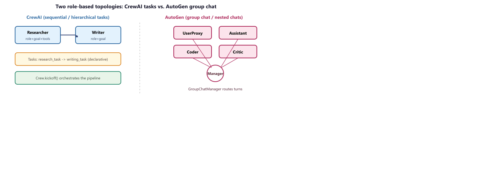
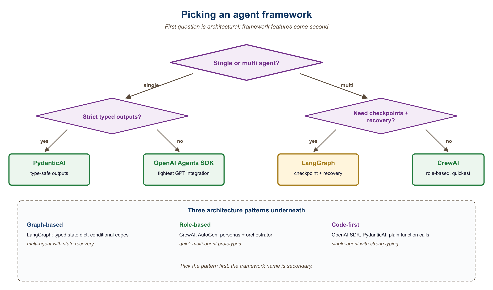

Agent libraries cluster into three styles: graph-based runtimes (LangGraph, AutoGen), role-based coordinators (CrewAI), and minimal "agent is a Python function" libraries (smolagents, PydanticAI). The choice maps to how much structure you want imposed.
30.2.1 Graph-based agent runtimes
- LangGraph v0.2+ (LangChain Inc., 2024-Q3 rewrite) is the explicit state-machine framework for agents, where you define nodes (LLM calls, tools, decisions) and edges (transitions) in a directed graph. The 0.2 rewrite consolidated the state-machine model and added LangGraph Studio, a visual debugger that displays the graph trace as it executes. Its objective is to make multi-step agent workflows debuggable, resumable, and human-pausable by modeling them as state machines with checkpoints, which matters when an agent runs for minutes and you need to intervene partway. The core concept is a typed State object that flows through the graph and persists to a checkpointer (Postgres, SQLite, Redis) at each node. Pick LangGraph when your agent has branches, loops, human-in-the-loop pauses, or long-running tasks; for a 3-step "search, summarize, send", it is overkill.
- AutoGen 0.4+ (Microsoft Research, 2024-Q4 rewrite) is Microsoft's multi-agent conversation framework, where agents talk to each other in a structured dialogue protocol. Its objective is to make agent-to-agent collaboration (Researcher proposing, Critic reviewing, Coder implementing) a first-class abstraction, which matters when the problem decomposes naturally into roles with iterative critique. The core concept is "GroupChat" or "team" abstractions plus an event-driven actor model after the v0.4 rewrite, which fundamentally changed the API from v0.2. If your AutoGen mental model is from 2023, re-read the v0.4 docs before touching code. Pick AutoGen for multi-agent debate or critique loops; for a single-agent workflow, LangGraph is tighter.
- LangChain Agents (LangChain Inc., 2022) is the older AgentExecutor abstraction that predated LangGraph. Its objective was the original "ReAct loop with tool calls" pattern, which mattered as the first widely-adopted agent framework. Today it is mostly legacy: new LangChain agents are built on LangGraph. Pick this only if you are maintaining an older codebase; for new work, start with LangGraph.
30.2.2 Role-based coordinators
- CrewAI (Joao Moura, 2024) is the agents-as-roles framework where you define personas ("Researcher", "Writer", "Reviewer") with goals and tools, and the framework orchestrates them. Its objective is to make multi-agent systems readable as workflows people understand (a job to be done with assigned roles), which matters for demo-driven prototyping and for non-engineer stakeholders. The core concept is the Crew (a team) + Tasks (assignments) + Process (sequential or hierarchical) abstraction; it hides the underlying graph entirely. Pick CrewAI when developer ergonomics and quick role-based demos matter; avoid when you need fine control over state transitions, which LangGraph gives you. Honest production caveat: CrewAI's 2024-25 reception in production teams has been mixed because the hidden control flow makes debugging non-trivial agent failures painful. The framework is great for demos and rapid prototyping; once your agent reaches "five-tool, five-step, non-deterministic", LangGraph's explicit-state model usually wins.
- CrewAI on GitHub: the source-of-truth open-source repository. Useful for inspecting implementation details, filing bugs, and seeing the version-pinned dependencies (CrewAI ships fast, and the docs can lag the latest release).
- swarms and motleycrew: alternative multi-agent libraries beyond CrewAI / AutoGen. Worth knowing exists; for most teams, picking among LangGraph / AutoGen / CrewAI is sufficient.
30.2.3 Minimal "agent as function" libraries
- smolagents (Hugging Face, 2024) is the minimalist agent library built around the CodeAct pattern: the agent writes Python code blocks as its actions, executed in a sandbox, then sees the output. Its objective is to demonstrate that a few-hundred-line library is enough for most agent use cases, which matters when LangChain or AutoGen feels too heavy for what you actually need. The core concept is "actions are Python code, not JSON tool calls" (the CodeAct pattern from Wang et al., 2024), letting the agent compose tools algorithmically. Pick smolagents when you want a tiny, hackable agent that writes code; for tool-heavy non-code workflows, function-calling frameworks are more direct.
- PydanticAI and pydantic-graph (Pydantic team, 2024-25) is the type-safe agent framework from the Pydantic maintainers, where every tool and result is a typed Pydantic model; pydantic-graph (2025) is the agent-graph extension that turns PydanticAI into a graph runtime competitor to LangGraph. The core concept is end-to-end typing: typed tool signatures, typed result models, typed deps injection; the LLM's tool calls and outputs are validated against the schema. Pick PydanticAI for production agents whose outputs flow into typed code; for prototype exploration where types are friction, LangGraph and smolagents are looser.
- Anthropic claude-agent-sdk (Anthropic, 2025): the official SDK for building Claude-based agents; subsumes much of what older agent frameworks tried to do with first-party tool, hook, and skill primitives. The right pick when you are committed to Claude and want Anthropic-supported abstractions.
- mastra (TypeScript): TS-native agent framework gaining mindshare in 2025; the right pick when your codebase is TypeScript-first.
- letta (formerly MemGPT): agent-memory framework with first-class long-term and hierarchical memory; relevant when "agent forgets" is your bottleneck.
- MCP Python and TS SDKs: the canonical libraries every MCP-aware tool now uses. If you are exposing a tool to any MCP client, this is the SDK.
- OpenAI Agents SDK (OpenAI, 2025) is OpenAI's official agent runtime, replacing the old Assistants API. Its objective is to provide first-party agent primitives (handoffs, guardrails, sessions, MCP support) for developers building on the OpenAI Responses API, which matters when you want OpenAI-supported abstractions rather than a third-party framework. Pick when your stack is OpenAI-only; for portability, LangGraph or PydanticAI are looser couplings.
- Anthropic's Computer Use SDK (Anthropic, 2024) is the agent-as-screen-controller toolkit for Claude, where the model sees a screenshot and emits mouse and keyboard actions. Its objective is to let Claude operate any UI a human could operate, even ones without APIs, which matters when automating legacy software or web apps with no programmatic access. The core concept is the "computer", "text-editor", and "bash" tool primitives that ship with Claude 3.5 Sonnet and later. Pick Computer Use when the target system has no API and a human-emulating agent is the only path; for API-accessible work, conventional tool-calling is more reliable.
30.2.4 Comparing the libraries
| Library | Style | Best for | Tradeoff |
|---|---|---|---|
| LangGraph | Graph state machine | Complex workflows | Steeper learning curve |
| AutoGen | Multi-agent chat | Agent-to-agent dialog | Less fine control over state |
| CrewAI | Role-based | Quick multi-role demos | Hides control flow |
| smolagents | CodeAct minimal | Code-writing agents | Smaller ecosystem |
| PydanticAI | Typed tools | Structured-output agents | Newer, fewer examples |
For a single-agent system with fewer than 10 tools, you do not need a framework. A while-loop, a function-calling-capable LLM, and a few hand-written tool definitions are sufficient. Frameworks pay off when you need persistence, human-in-the-loop checkpoints, multi-agent coordination, or production observability. Anthropic's "Building Effective Agents" essay makes this case in detail.
LangChain Agents (Legacy) and Callbacks
Agents are LLM-powered programs that can use tools to accomplish tasks. Instead of following a fixed chain of steps, an agent observes the current state, decides which tool to call (if any), interprets the result, and repeats until the task is complete. LangChain provides the primitives to define tools, wire them to a model, and run the agent loop. For production-grade agent workflows with branching, cycles, and human-in-the-loop controls, see the LangGraph documentation.
1. Defining Tools
A tool is a function that the LLM can choose to call. Each tool has a name, a description (which the model reads to decide when to use it), and a function that executes the action. LangChain provides the @tool decorator for creating tools from ordinary Python functions.
This example defines two custom tools: one that performs a calculation and one that looks up the current weather.
from langchain_core.tools import tool
from typing import Annotated
@tool
def calculate(expression: Annotated[str, "A mathematical expression to evaluate"]) -> str:
"""Evaluate a mathematical expression and return the result.
Use this for any arithmetic or math questions."""
try:
result = eval(expression) # In production, use a safe math parser
return str(result)
except Exception as e:
return f"Error: {e}"
@tool
def get_weather(
city: Annotated[str, "The city name"],
unit: Annotated[str, "Temperature unit: celsius or fahrenheit"] = "celsius"
) -> str:
"""Get the current weather for a city.
Use this when the user asks about weather conditions."""
# In production, this would call a real weather API
return f"The weather in {city} is 22 degrees {unit} and sunny."
# Inspect the tool's schema (this is what the model sees)
print(calculate.name) # "calculate"
print(calculate.description) # "Evaluate a mathematical expression..."
print(calculate.args_schema.schema()) # JSON schema for argumentsWrite clear, specific tool descriptions. The model uses these descriptions to decide which tool to call, so vague descriptions lead to incorrect tool selection. Include examples of when to use (and when not to use) each tool. The docstring becomes the tool's description; type annotations with Annotated become the parameter descriptions.
2. Built-in Tools
LangChain provides pre-built tool integrations for common operations. These save you from writing boilerplate for popular APIs and services.
from langchain_community.tools import DuckDuckGoSearchRun
from langchain_community.tools import WikipediaQueryRun
from langchain_community.utilities import WikipediaAPIWrapper
# Web search via DuckDuckGo (no API key required)
search_tool = DuckDuckGoSearchRun()
result = search_tool.invoke("LangChain framework latest version 2025")
print(result[:200])
# Wikipedia lookup
wiki_tool = WikipediaQueryRun(api_wrapper=WikipediaAPIWrapper(top_k_results=1))
result = wiki_tool.invoke("Transformer neural network architecture")
print(result[:200])3. Creating an Agent with create_tool_calling_agent
The create_tool_calling_agent function creates an agent that uses the model's native tool-calling capability (available in GPT-4o, Claude, Gemini, and others). The model decides which tools to call based on the user's input, and LangChain handles the execution loop via AgentExecutor.
This example creates an agent with access to the calculator and weather tools, then runs it on a multi-step question.
from langchain_openai import ChatOpenAI
from langchain.agents import create_tool_calling_agent, AgentExecutor
from langchain_core.prompts import ChatPromptTemplate, MessagesPlaceholder
# Define the prompt with a placeholder for agent scratchpad
prompt = ChatPromptTemplate.from_messages([
("system", "You are a helpful assistant with access to tools. "
"Use them when needed to answer questions accurately."),
MessagesPlaceholder(variable_name="chat_history", optional=True),
("human", "{input}"),
MessagesPlaceholder(variable_name="agent_scratchpad")
])
# Initialize model and tools
model = ChatOpenAI(model="gpt-4o", temperature=0)
tools = [calculate, get_weather]
# Create the agent
agent = create_tool_calling_agent(model, tools, prompt)
# Wrap in AgentExecutor to handle the tool-call loop
executor = AgentExecutor(
agent=agent,
tools=tools,
verbose=True, # Print each step for debugging
max_iterations=5 # Safety limit on tool-call loops
)
# Run the agent
result = executor.invoke({
"input": "What is the weather in Paris? Also, what is 15% of 847?"
})
print(result["output"])
4. Callbacks and Tracing
Callbacks let you hook into every step of chain and agent execution: model calls, tool invocations, retriever queries, parsing, and errors. LangChain fires callback events at well-defined points in the execution lifecycle, and you can attach handlers to log, monitor, or modify behavior.
This example creates a custom callback handler that logs each step of agent execution.
from langchain_core.callbacks import BaseCallbackHandler
from typing import Any, Dict
class LoggingHandler(BaseCallbackHandler):
"""Logs every LLM call and tool invocation."""
def on_llm_start(self, serialized: Dict[str, Any], prompts: list, **kwargs):
print(f"[LLM START] Model: {serialized.get('id', ['unknown'])}")
def on_llm_end(self, response, **kwargs):
print(f"[LLM END] Tokens used: {response.llm_output}")
def on_tool_start(self, serialized: Dict[str, Any], input_str: str, **kwargs):
print(f"[TOOL START] {serialized.get('name', 'unknown')}: {input_str}")
def on_tool_end(self, output: str, **kwargs):
print(f"[TOOL END] Result: {output[:100]}")
def on_agent_action(self, action, **kwargs):
print(f"[AGENT ACTION] {action.tool}: {action.tool_input}")
def on_agent_finish(self, finish, **kwargs):
print(f"[AGENT FINISH] {finish.return_values}")
# Attach the handler to the executor
result = executor.invoke(
{"input": "What is 2^10?"},
config={"callbacks": [LoggingHandler()]}
)5. LangSmith Tracing
For production observability, LangChain integrates with LangSmith, a hosted tracing and evaluation platform. When enabled, every chain and agent execution is automatically traced with full input/output logging, latency breakdowns, token counts, and error tracking. No code changes are required beyond setting environment variables.
import os
# Enable LangSmith tracing (set these before importing LangChain)
os.environ["LANGCHAIN_TRACING_V2"] = "true"
os.environ["LANGCHAIN_API_KEY"] = "ls__..." # Your LangSmith API key
os.environ["LANGCHAIN_PROJECT"] = "my-agent-app" # Project name in LangSmith
# All subsequent chain/agent invocations are automatically traced.
# View traces at https://smith.langchain.com
# You can also add custom metadata to traces
result = executor.invoke(
{"input": "Summarize the weather in Tokyo"},
config={
"metadata": {"user_id": "user-456", "request_id": "req-789"},
"tags": ["production", "weather-agent"]
}
)LangSmith tracing is invaluable during development and debugging. Enable it early in your project. The free tier is generous enough for development use. In production, use tags and metadata to filter traces by user, session, or feature, making it easy to investigate specific issues.
6. Custom Agent Loops
The AgentExecutor handles the most common agent pattern, but some applications need custom control flow: conditional tool selection, parallel tool calls, human approval before executing certain tools, or complex error recovery. For these cases, you can build a custom agent loop using LangChain's primitives directly.
This example implements a minimal agent loop that gives you full control over the execution cycle.
from langchain_openai import ChatOpenAI
from langchain_core.messages import HumanMessage, AIMessage, ToolMessage
model = ChatOpenAI(model="gpt-4o", temperature=0)
model_with_tools = model.bind_tools([calculate, get_weather])
def run_agent(user_input: str, max_steps: int = 5) -> str:
"""A custom agent loop with full control over execution."""
messages = [HumanMessage(content=user_input)]
tools_map = {"calculate": calculate, "get_weather": get_weather}
for step in range(max_steps):
# Ask the model
response = model_with_tools.invoke(messages)
messages.append(response)
# If no tool calls, we have the final answer
if not response.tool_calls:
return response.content
# Execute each tool call
for tool_call in response.tool_calls:
tool_name = tool_call["name"]
tool_args = tool_call["args"]
print(f"Step {step + 1}: Calling {tool_name}({tool_args})")
# Optional: add approval logic here
# if tool_name == "dangerous_tool":
# approval = input("Approve? (y/n): ")
# if approval != "y":
# continue
# Execute the tool
tool_fn = tools_map[tool_name]
result = tool_fn.invoke(tool_args)
# Add the tool result as a ToolMessage
messages.append(ToolMessage(
content=str(result),
tool_call_id=tool_call["id"]
))
return "Agent reached maximum steps without a final answer."
# Run the custom agent
answer = run_agent("What is the weather in London and what is 42 * 17?")
print(answer)Use AgentExecutor for straightforward tool-calling agents. Use a custom loop (as above) for simple cases where you need one specific customization such as approval gates. For anything involving branching logic, cycles, persistent state, or multi-agent coordination, use LangGraph, which provides a graph-based execution framework built for complex agent architectures.
7. Best Practices for Production Agents
Deploying agents in production requires careful attention to reliability, cost, and safety. The following guidelines apply to all agent implementations, whether you use AgentExecutor, a custom loop, or LangGraph.
| Concern | Recommendation |
|---|---|
| Runaway loops | Set max_iterations (AgentExecutor) or a step counter (custom loop). A typical limit is 5 to 10 iterations. |
| Cost control | Use callback handlers to track token usage per request. Set hard budget limits and abort if exceeded. |
| Tool safety | Validate tool inputs before execution. Never pass user-controlled strings to eval() or shell commands without sanitization. |
| Error handling | Set handle_parsing_errors=True on AgentExecutor. In custom loops, catch tool exceptions and return error messages to the model. |
| Observability | Enable LangSmith tracing in all environments. Tag traces with user and session IDs for debugging. |
| Timeouts | Set max_execution_time on AgentExecutor or use asyncio.wait_for() in async agents. |
LangChain agents combine an LLM's reasoning with tool execution in a loop. Use the @tool decorator to define tools with clear descriptions, create_tool_calling_agent for standard agent creation, and AgentExecutor to run the loop. Enable LangSmith tracing for observability, and set iteration limits and timeouts for safety. For complex agent architectures, graduate to LangGraph.
Agent Frameworks Deep Dive
Agent frameworks enable LLMs to take actions, use tools, plan multi-step workflows, and collaborate with other agents. The seven frameworks compared here represent three distinct architecture patterns: graph-based (LangGraph), role-based multi-agent (CrewAI, AutoGen), and code-first (OpenAI Agents SDK, Semantic Kernel, smolagents, PydanticAI). Each pattern optimizes for different trade-offs between control, simplicity, and multi-agent coordination.
1. Architecture Patterns
See Chapter 26 (AI Agents) and Chapter 28.2 (Architecture Patterns) for the agent-pattern theory. This appendix shows how each pattern looks in code across the seven frameworks.
1.1 Graph-Based Architecture (LangGraph)
See Chapter 26 for the graph-based agent pattern. The LangGraph implementation is:
The following example illustrates a LangGraph agent with a tool-calling loop and a human-in-the-loop approval step.
from langgraph.graph import StateGraph, END
from langgraph.prebuilt import ToolNode
from langchain_openai import ChatOpenAI
from langchain_core.messages import HumanMessage
from typing import TypedDict, Annotated
import operator
class AgentState(TypedDict):
messages: Annotated[list, operator.add]
llm = ChatOpenAI(model="gpt-4o").bind_tools([search_tool, calculator_tool])
def call_model(state: AgentState):
response = llm.invoke(state["messages"])
return {"messages": [response]}
def should_continue(state: AgentState):
last = state["messages"][-1]
if last.tool_calls:
return "tools"
return END
graph = StateGraph(AgentState)
graph.add_node("agent", call_model)
graph.add_node("tools", ToolNode([search_tool, calculator_tool]))
graph.set_entry_point("agent")
graph.add_conditional_edges("agent", should_continue, {"tools": "tools", END: END})
graph.add_edge("tools", "agent")
app = graph.compile()
result = app.invoke({"messages": [HumanMessage("What is 15% of the GDP of France?")]})1.2 Role-Based Multi-Agent Architecture (CrewAI, AutoGen)
See Chapter 28.2 for the role-based multi-agent pattern. The CrewAI implementation below shows a research team with two specialized agents collaborating on a report.

Crew of Agents and ordered Tasks into a sequential or hierarchical pipeline; AutoGen wires agents into a GroupChat whose manager picks the next speaker each turn. Both expose the same role / goal / tools abstraction; the topology decides how messages flow.The choice between the two libraries is essentially a choice of message-flow topology. Let $A$ be the set of agents and let $\sigma_t \in A$ be the speaker at turn $t$. CrewAI fixes $\sigma_t$ by the static task graph (each Task names its agent), so the next speaker is a deterministic function $\sigma_{t+1} = \mathrm{next\_task}(\sigma_t)$. AutoGen instead lets a manager LLM pick the speaker from a conditional distribution over agents:
$$ \sigma_{t+1} \sim p_{\text{manager}}(\cdot \mid \text{history}_{1:t}, A) $$
The deterministic CrewAI flow is easier to reason about and to evaluate; the AutoGen flow is more adaptive but introduces a second decision (who speaks next) that can itself fail. In practice, teams pick CrewAI when the workflow is known upfront (research then write then review) and AutoGen when the conversation shape depends on intermediate results (the critic only speaks if the coder produced code).
from crewai import Agent, Task, Crew, LLM
llm = LLM(model="gpt-4o")
researcher = Agent(
role="Senior Research Analyst",
goal="Find comprehensive data on the given topic",
backstory="You are an expert researcher with 20 years of experience.",
tools=[search_tool, web_scraper],
llm=llm,
)
writer = Agent(
role="Technical Writer",
goal="Create a clear, well-structured report from research findings",
backstory="You specialize in making complex topics accessible.",
llm=llm,
)
research_task = Task(
description="Research the current state of LLM inference optimization.",
expected_output="A detailed list of findings with sources.",
agent=researcher,
)
writing_task = Task(
description="Write a 1000-word report based on the research findings.",
expected_output="A polished report in markdown format.",
agent=writer,
)
crew = Crew(agents=[researcher, writer], tasks=[research_task, writing_task], verbose=True)
result = crew.kickoff()The AutoGen counterpart replaces CrewAI's declarative Crew + ordered Tasks with a GroupChat wired through a GroupChatManager. The same four lines define a Coder and a User Proxy, hand them to a group chat, and let the manager pick the next speaker on every turn.
import autogen
coder = autogen.AssistantAgent(name="coder", llm_config={"model": "gpt-4o"})
user = autogen.UserProxyAgent(name="user", human_input_mode="NEVER",
code_execution_config={"work_dir": "out"})
chat = autogen.GroupChat(agents=[user, coder], messages=[], max_round=8)
manager = autogen.GroupChatManager(groupchat=chat,
llm_config={"model": "gpt-4o"})
user.initiate_chat(manager, message="Plot prime gaps below 1000 with matplotlib.")
Code Fragment 30.2.2b: An AutoGen group chat with a Coder and a User Proxy. The GroupChatManager is itself an LLM-driven router that picks the next speaker on every turn, the topology drawn on the right side of Figure 30.2.f1.
Take the crew defined above and ask it to produce a 1000-word report on LLM inference optimization. A typical successful run looks like this turn-by-turn:
- Turn 1 (Researcher). The orchestrator activates
research_task, binds it to the Researcher, and prompts the agent with its role + goal + backstory + task description. The agent callssearch_tool("LLM inference optimization 2025"), gets 8 hits, then callsweb_scrapertwice on the most relevant URLs. After 3 tool calls and 4 reasoning steps it emits the expected output: a markdown bullet list of 12 findings with sources, totalling 780 tokens. - Turn 2 (Writer). The orchestrator activates
writing_task, binds it to the Writer, and prepends the Researcher's output as task context (CrewAI passes upstream task outputs into downstream task prompts automatically). The Writer has no tools, so it produces the report in one LLM call: 1024 tokens of polished markdown. - Result.
crew.kickoff()returns the Writer's output. Total: 2 agents, 2 tasks, 5 LLM calls (4 Researcher + 1 Writer), 3 tool calls, end-to-end 18 seconds withgpt-4o.
The same workflow in AutoGen would be a 4-agent group chat (User, Researcher, Writer, Manager) where the Manager picks the speaker each turn; the same task takes roughly twice as many LLM calls because the Manager adds an extra "who-speaks-next" turn between every content turn. This is the concrete cost of moving from deterministic CrewAI task flow to AutoGen's adaptive routing.
1.3 Code-First Architecture (OpenAI Agents SDK, smolagents, PydanticAI)
See Chapter 26 for the code-first agent loop pattern. The OpenAI Agents SDK implementation below shows a minimal agent definition.
from agents import Agent, Runner, function_tool
@function_tool
def search(query: str) -> str:
"""Search the web for information."""
return web_search(query)
@function_tool
def calculate(expression: str) -> float:
"""Evaluate a mathematical expression."""
return eval(expression)
agent = Agent(
name="Research Assistant",
instructions="You help users find information and perform calculations.",
tools=[search, calculate],
model="gpt-4o",
)
result = Runner.run_sync(agent, "What is 15% of the GDP of France?")2. Comprehensive Feature Comparison
The following table compares all seven agent frameworks across key dimensions relevant to production agent development.
| Feature | LangGraph | CrewAI | AutoGen | OpenAI Agents SDK | Semantic Kernel | smolagents | PydanticAI |
|---|---|---|---|---|---|---|---|
| Architecture | Graph/state machine | Role-based crew | Conversation-based | Code-first loop | Plugin/planner | Code-first minimal | Type-safe agents |
| Maintainer | LangChain Inc. | CrewAI Inc. | Microsoft | OpenAI | Microsoft | Hugging Face | Pydantic team |
| Language | Python, JS/TS | Python | Python, .NET | Python | Python, C#, Java | Python | Python |
| Multi-agent support | Via sub-graphs | Native (crews) | Native (groups) | Via handoffs | Via planners | Basic | Manual composition |
| Tool calling | Full (any provider) | Full (decorator) | Full (function map) | Full (decorator) | Full (plugins) | Full (decorator) | Full (Pydantic) |
| Human-in-the-loop | Native (interrupt) | Built-in | Built-in | Manual | Approval hooks | Manual | Manual |
| State persistence | Checkpointers | Memory system | Conversation store | None built-in | Memory stores | None built-in | None built-in |
| Streaming | Full | Event-based | Full | Full | Full | Basic | Full |
| LLM provider lock-in | None (any provider) | None (litellm) | None (configurable) | OpenAI only | None (connectors) | None (any provider) | None (any provider) |
| Observability | LangSmith native | CrewAI+ dashboard | AutoGen Studio | OpenAI dashboard | OpenTelemetry | Basic logging | Logfire native |
| License | MIT | MIT | MIT (CC-BY-4.0 docs) | MIT | MIT | Apache 2.0 | MIT |
| GitHub stars (approx.) | 15k+ | 25k+ | 38k+ | 15k+ | 24k+ | 15k+ | 8k+ |
3. Multi-Agent Patterns
See Chapter 28.2 (Architecture Patterns) for the supervisor / collaborative / hierarchical taxonomy. The framework-specific implementations are referenced in the feature table above (Section 2): LangGraph uses conditional edges and nested sub-graphs; CrewAI exposes hierarchical and sequential processes; AutoGen relies on group chats and nested group chats; the OpenAI Agents SDK uses the handoff mechanism.
Multi-agent systems add complexity that is rarely justified for simple tasks. A single agent with multiple tools often outperforms a multi-agent system on straightforward workflows, with lower latency and easier debugging. Reserve multi-agent patterns for genuinely complex workflows where different steps require different expertise, different LLM configurations, or different trust boundaries. Start with a single agent and add agents only when you hit the limits of the single-agent approach.
4. Production Readiness
Agent frameworks vary widely in their production readiness. The following assessment focuses on features that matter when running agents in production environments with real users.
| Production Feature | LangGraph | CrewAI | AutoGen | OpenAI Agents SDK | Semantic Kernel |
|---|---|---|---|---|---|
| State recovery after failure | Checkpointers (Redis, SQL) | Memory persistence | Conversation replay | Manual | Memory stores |
| Timeout and retry handling | Built-in | Built-in | Configurable | Built-in | Built-in |
| Cost control (token budgets) | Via callbacks | Built-in budgets | Token counting | Via API settings | Via filters |
| Guardrails integration | Custom nodes | Guardrails config | Custom agents | Native guardrails | Filters |
| Deployment platform | LangGraph Cloud | CrewAI Enterprise | AutoGen Studio | OpenAI platform | Azure AI |
| Long-running task support | Native (async nodes) | Background tasks | Async groups | Async runner | Step-based |
5. When to Use Each Framework
The following decision table provides concrete recommendations based on common project requirements and team characteristics.

| If you need... | Best Fit | Runner-Up | Rationale |
|---|---|---|---|
| Maximum control over agent flow | LangGraph | Semantic Kernel | Graph-based architecture makes every state transition explicit |
| Quick multi-agent prototype | CrewAI | AutoGen | Role-based definition is intuitive; minimal boilerplate |
| Enterprise .NET/Java ecosystem | Semantic Kernel | AutoGen (.NET) | Microsoft backing; native C# and Java SDKs; Azure integration |
| OpenAI-only deployment | OpenAI Agents SDK | LangGraph | Tightest integration with OpenAI models and platform |
| Minimal dependencies | smolagents | PydanticAI | Lightest footprint; no heavy framework overhead |
| Type-safe structured outputs | PydanticAI | Semantic Kernel | Built on Pydantic; native structured output validation |
| Research agent with code execution | AutoGen | CrewAI | Built-in code executor; designed for code-writing agents |
| Production multi-agent with state | LangGraph | CrewAI | Checkpointing and state recovery for long-running agents |
| Open-source model flexibility | smolagents | LangGraph | Hugging Face ecosystem; works with any model on the Hub |
The agent framework landscape is evolving faster than any other LLM tooling category. New frameworks appear monthly, and existing frameworks add features rapidly. The architectural patterns (graph, role-based, code-first) are more stable than specific framework features. Choose based on architecture fit first, then evaluate features within your preferred architecture pattern.
6. Integration and Interoperability
Agent frameworks do not exist in isolation. They connect to orchestration layers (the Orchestration Frameworks overview), evaluation tools (Experiment Tracking), and serving infrastructure (vLLM & Inference Servers). Key integration points to evaluate include:
- Tool protocol: LangGraph and CrewAI use different tool-calling interfaces. Ensure your tools can be shared across frameworks if you are evaluating multiple options.
- Observability hooks: LangGraph integrates natively with LangSmith. CrewAI has its own telemetry. Semantic Kernel uses OpenTelemetry. Verify that your chosen observability tool (see Experiment Tracking) can capture traces from your agent framework.
- Model Context Protocol (MCP): MCP is emerging as a standard protocol for connecting agents to external tools and data sources. LangGraph, OpenAI Agents SDK, and smolagents all support MCP clients, enabling agents to connect to any MCP-compliant tool server.
- Deployment model: Some frameworks (LangGraph Cloud, CrewAI Enterprise) offer managed deployment. Others require you to build your own deployment infrastructure. Match the deployment model to your operational capabilities.
Summary
Agent frameworks divide into three architecture patterns: graph-based (LangGraph) for maximum control, role-based (CrewAI, AutoGen) for intuitive multi-agent collaboration, and code-first (OpenAI Agents SDK, smolagents, PydanticAI) for simplicity and transparency. Semantic Kernel bridges the enterprise world with multi-language support and Azure integration. For production systems requiring state persistence, failure recovery, and human-in-the-loop approval, LangGraph and Semantic Kernel offer the most mature feature sets. For rapid prototyping of multi-agent systems, CrewAI provides the fastest path. For minimal-dependency single-agent use cases, smolagents or PydanticAI keep your stack lean.
30.2.5 LangGraph Tutorial: From Chain to ReAct Agent
The earlier subsections compared LangGraph against alternative agent frameworks at the level of API style. This tutorial works through the framework end-to-end: typed state with reducers, a simple chain graph, the prebuilt tools_condition router, a full ReAct chat agent, persistent memory via Checkpointer and Thread, the two streaming modes, the human-in-the-loop interrupt pattern, and the LangGraph Studio visual debugger. The goal is to give a reader the working mental model needed to debug a LangGraph application, not just call it.
Core concepts: state, nodes, edges
A LangGraph application is a directed graph whose nodes are pure Python functions that receive the current state and return an update, and whose edges decide which node runs next. The graph carries a single typed State object that is threaded through every node call. Four node names are reserved: START (the implicit entry point), END (the implicit exit), ERROR (raised when a node throws), and TOOLS (the prebuilt tool-execution node). Every other node name is user-defined.
The simplest graph builds the state machine, registers two function nodes, and connects them with a single edge. The state is a TypedDict whose fields are mutated by each node:
from langgraph.graph import StateGraph, START, END
from typing import TypedDict
class CountState(TypedDict):
value: int
def increment(state: CountState) -> dict:
return {"value": state["value"] + 1}
def double(state: CountState) -> dict:
return {"value": state["value"] * 2}
graph = StateGraph(CountState)
graph.add_node("inc", increment)
graph.add_node("dbl", double)
graph.add_edge(START, "inc")
graph.add_edge("inc", "dbl")
graph.add_edge("dbl", END)
app = graph.compile()
print(app.invoke({"value": 3})) # {'value': 8}: (3+1)*2
StateGraph takes the state type, nodes are added by name, and the chain runs in the order of add_edge(...) calls until it hits END.Reducers: how nodes append to state
Each node's return value is normally merged field-by-field into the state, overwriting the previous value. For lists (messages, tool calls, observations), overwriting is the wrong default: a node that wants to append a new chat message would erase the entire history. LangGraph solves this with reducer functions declared in the state schema via typing.Annotated. The reducer takes the old field value and the node's update and returns the combined value. For message lists, the convention is to use operator.add (or LangGraph's add_messages, which deduplicates by ID):
from langgraph.graph.message import add_messages
from langchain_core.messages import AnyMessage
from typing import Annotated, TypedDict
class ChatState(TypedDict):
# The reducer is the second tuple element. add_messages appends new
# messages instead of overwriting the list and dedupes by message id.
messages: Annotated[list[AnyMessage], add_messages]
AnyMessage is the union of HumanMessage, AIMessage, and ToolMessage; the reducer makes every node's returned messages append rather than overwrite.A chain graph: LLM-only chat
The minimal chat application wires a single LLM node into the chain. The node receives the message list, calls the model, and returns the new AIMessage; the reducer appends it to history. This is functionally identical to a hand-rolled chat loop, but expressed as a graph it composes cleanly with the additions that follow.
from langchain_openai import ChatOpenAI
from langchain_core.messages import HumanMessage
llm = ChatOpenAI(model="gpt-4o")
def chat_node(state: ChatState) -> dict:
response = llm.invoke(state["messages"])
return {"messages": [response]} # the reducer appends, not replaces
graph = StateGraph(ChatState)
graph.add_node("chat", chat_node)
graph.add_edge(START, "chat")
graph.add_edge("chat", END)
app = graph.compile()
out = app.invoke({"messages": [HumanMessage("What is the boiling point of water?")]})
print(out["messages"][-1].content)
Adding tools: ToolNode and tools_condition
Turning the chain into a ReAct agent requires three additions: bind tools to the LLM so it can emit tool_calls, add LangGraph's prebuilt ToolNode (registered under the reserved TOOLS name) to execute those calls and append the result, and add a conditional edge driven by the prebuilt tools_condition router. The router inspects the last message: if it contains tool calls it routes to tools; otherwise it routes to END. The tools node's output flows back into the chat node, closing the ReAct loop.
from langgraph.prebuilt import ToolNode, tools_condition
from langchain_core.tools import tool
@tool
def get_weather(city: str) -> str:
"""Return the current weather for a city."""
return f"{city}: 18C, partly cloudy"
@tool
def calculator(expression: str) -> str:
"""Evaluate a simple arithmetic expression."""
return str(eval(expression)) # toy: in production use a safe parser
tools = [get_weather, calculator]
llm_with_tools = ChatOpenAI(model="gpt-4o").bind_tools(tools)
def chat_node(state: ChatState) -> dict:
return {"messages": [llm_with_tools.invoke(state["messages"])]}
graph = StateGraph(ChatState)
graph.add_node("chat", chat_node)
graph.add_node("tools", ToolNode(tools)) # the reserved TOOLS node
graph.add_edge(START, "chat")
graph.add_conditional_edges("chat", tools_condition) # routes to "tools" or END
graph.add_edge("tools", "chat") # close the ReAct loop
app = graph.compile()
out = app.invoke({"messages": [HumanMessage(
"What is the weather in Paris, and what is 23 * 17?")]})
for m in out["messages"]:
print(type(m).__name__, getattr(m, "content", "")[:80])
ToolNode, tools_condition) plus one conditional edge turn the chain graph into the ReAct loop. The model may emit only one tool call per turn; multiple tools are handled by repeated chat-tools cycles.This is the canonical ReAct chat agent. Adding more tools is a one-line change (extend the tools list and rebind); adding planning, reflection, or memory is a matter of adding more nodes and wiring more edges, exactly as the planning and agentic-flow sections of Chapter 26 do.
Memory: Checkpointer and Thread
By default no state is preserved between invoke calls: each invocation starts from the input dict. Production agents need persistence for at least three reasons: multi-turn conversation, resume-after-crash, and human-in-the-loop interrupts that may pause for minutes or days. LangGraph models this with two abstractions. A Checkpoint is the state plus the execution-progress marker captured after every node returns. A Thread is the ordered collection of checkpoints belonging to one logical session, identified by a thread_id. Compiling the graph with a checkpointer (MemorySaver for tests, PostgresSaver or SqliteSaver in production) makes both first-class:
from langgraph.checkpoint.memory import MemorySaver
memory = MemorySaver()
app = graph.compile(checkpointer=memory)
# One thread (one conversation), two turns: the second sees the first.
config = {"configurable": {"thread_id": "session-42"}}
app.invoke({"messages": [HumanMessage("My name is Yossi.")]}, config=config)
out = app.invoke({"messages": [HumanMessage("What is my name?")]}, config=config)
print(out["messages"][-1].content) # "Your name is Yossi."
# Inspect the thread: a list of checkpoints, newest first.
for ckpt in app.get_state_history(config):
print(ckpt.config["configurable"]["checkpoint_id"], len(ckpt.values["messages"]))
# Resume from step 5: pick a past checkpoint and continue from it.
old_config = list(app.get_state_history(config))[4].config
app.invoke(None, config=old_config) # replays from that checkpoint forward
get_state_history lists past checkpoints and any one of them can be the starting config for a fresh invoke, which is the "time-travel debugging" feature.Streaming modes: values vs updates
For UIs and tracing, app.stream(...) yields events as the graph runs instead of returning only the final state. The two most common modes differ in what they yield. stream_mode="values" emits the complete state after each reducer runs: every event is a full state dict, which is convenient when the UI re-renders from scratch but verbose. stream_mode="updates" emits only the per-node update dict, keyed by node name: events are small and tell you exactly which node produced the change, which is what tracing and observability backends want.
# Full state after every reducer (UI-friendly, verbose).
for event in app.stream({"messages": [HumanMessage("Weather in Tokyo?")]},
config=config, stream_mode="values"):
print("STATE", len(event["messages"]), "msgs")
# Just the per-node update (logs / tracing-friendly, compact).
for event in app.stream({"messages": [HumanMessage("And in Lima?")]},
config=config, stream_mode="updates"):
# event is e.g. {"chat": {"messages": [AIMessage(...)]}}
node_name = next(iter(event))
print("UPDATE from", node_name)
values emits the full post-reducer state; updates emits only the per-node delta. Pick values for live-rendered UIs, updates for tracing and observability.Human-in-the-loop: interrupt_before
For agents that take consequential actions (send email, run SQL writes, transfer funds), the right design pattern is to pause the graph at a known node, surface the proposed action to a human, and resume only after approval. LangGraph implements this by compiling the graph with interrupt_before=[...] (or interrupt_after). When execution reaches a listed node the graph saves a checkpoint, returns control to the caller, and waits. The caller inspects the pending state, optionally edits it with app.update_state(...), and resumes by calling invoke(None, config=...) on the same thread. The mechanism rides on top of checkpointing, which is why thread_id is required for HITL.
app = graph.compile(checkpointer=memory, interrupt_before=["tools"])
config = {"configurable": {"thread_id": "approval-1"}}
# Step 1: run until just before any tool call.
app.invoke({"messages": [HumanMessage(
"Send a thank-you email to alice@example.com.")]}, config=config)
pending = app.get_state(config)
print("Proposed action:", pending.values["messages"][-1].tool_calls)
# Step 2 (human review): operator edits the args, then resumes.
edited = pending.values["messages"][-1]
edited.tool_calls[0]["args"]["body"] = "Thanks, Alice. From the LangGraph agent."
app.update_state(config, {"messages": [edited]})
# Step 3: resume from the saved checkpoint; the tool now executes.
final = app.invoke(None, config=config)
print(final["messages"][-1].content)
interrupt_before=["tools"] pauses execution before the tools node runs; the operator inspects the pending tool call, edits arguments if needed via update_state, then resumes by invoking with None on the same thread.The architectural rationale for HITL and the broader approval-flow design pattern live in Section 28.3; the code above is the LangGraph wire-level implementation.
LangGraph Studio: visual debugging
LangGraph Studio is the in-browser graph debugger that ships with the LangGraph platform. It renders the compiled graph as a live diagram, highlights the currently-executing node, exposes each checkpoint's state for inspection and edit, and lets the developer rewind to any past checkpoint and re-run forward from there. The same time-travel mechanism described in Code Fragment 30.2.9 is what Studio is showing graphically: every event the runtime emits already has a checkpoint ID, and Studio is the UI on top. For teams adopting LangGraph in production, Studio is the single best argument for using the framework rather than rolling a custom loop: a hand-rolled while-loop has no equivalent.
Eight concepts cover essentially every LangGraph application: typed state, function nodes, conditional edges, reducers for append-style updates, the prebuilt ToolNode + tools_condition router that turns a chain into a ReAct agent, a checkpointer + thread for persistence and resume, two streaming modes (values for full state, updates for per-node deltas), and interrupts for human-in-the-loop pauses. Everything else (subgraphs, parallel branches, send/recv APIs) layers on top of these primitives.
Build a MemGPT-lite agent in LangGraph that adds two tools, load_memory(query) (vector search over a long-term store) and save_memory(text) (insert into the same store), and an agent node that prepends the top three recalled memories to every prompt before calling the LLM. Wire tools_condition so the agent can choose to load, save, or skip on each turn. Verify that across two threads sharing the same memory store, a fact saved in thread A becomes retrievable in thread B.
What's Next?
In the next part of this section, Section 30.3: Multi-Agent Patterns & Topologies, we move from single-agent libraries to the topologies that combine multiple agents into one system.
Further Reading
MemorySaver, SqliteSaver, and PostgresSaver backends; the thread / checkpoint abstractions that drive both Section 30.2.5's memory subsection and Section 26.6's resume test.